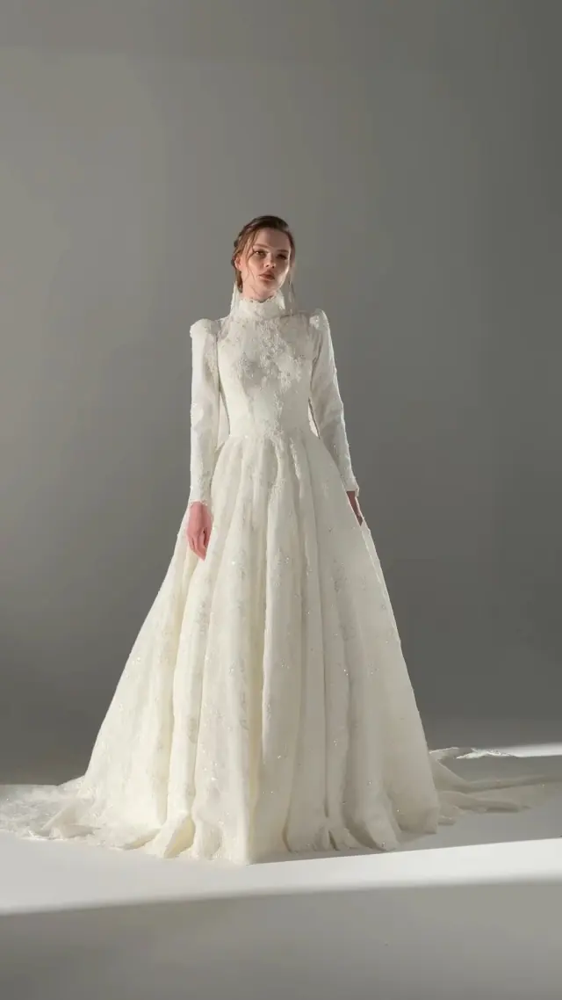
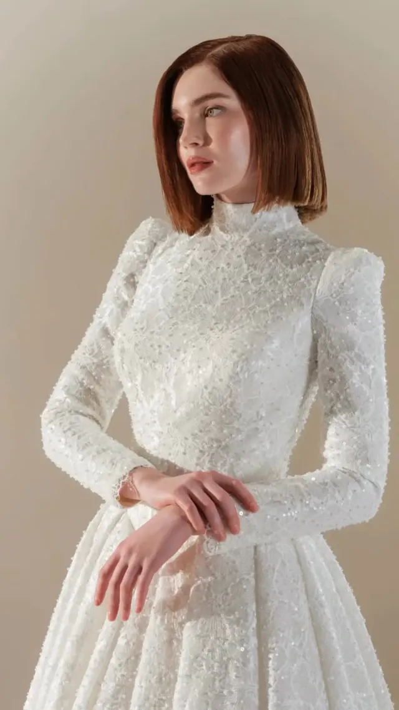
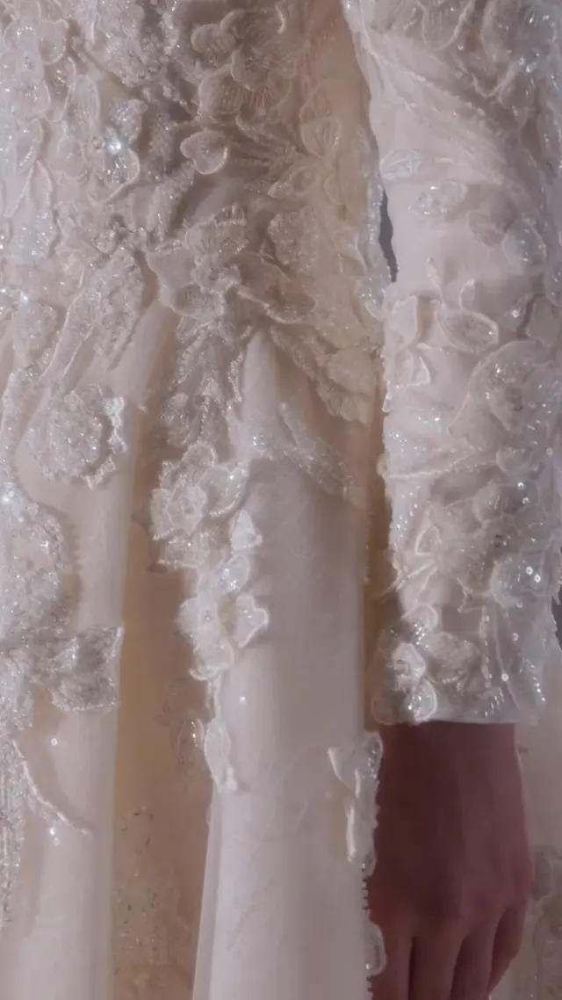

01LavinyaKupon dantel
01LavinyaKupon dantel

Modest couture
Bridal Studio · İstanbul
Yalnız randevu ile
Atölye
Kupon dantel. El yapımı güller. Saten ve ipek tül. Kapalı kesim, couture işçilik.
Aşkını bulanlara Maşuk olmak için hazırız.
Seçki
01LavinyaKupon dantel
 02BellaEl yapımı güller, ipek tül
02BellaEl yapımı güller, ipek tül

03Luna & Julietİki tarz, tek ortak noktaTüm tasarımlar
Satış ve kiralama
Satış
Size göre prova edilen, sizde kalan bir gelinlik.
Kiralama
Aynı işçilik, kiralama seçeneğiyle.
Fiyat ve koşullar randevuda ya da WhatsApp'ta paylaşılır.
Randevu
- 01
WhatsApp'tan yazın, düğün tarihinizi paylaşın.
- 02
Gün ve saati birlikte belirleyelim.
- 03
Atölyede deneyin, işçiliği yakından görün.
- 04
Satış ya da kiralama ile tarihinizi ayırtın.

Atölye
Gezi Yolu Sok. No:26Dragos, Kartal, İstanbul